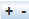

There are many different sources of data that can make use of the charting facility in McIDAS-V. It is possible to use the charting facility to display the data by selecting Data Probe/Time Series in the Displays menu in the Field Selector tab of the Data Explorer. The chart will be plotted in the Layer Controls tab, while a square representing the location of the probe will be shown in the Main Display window. The location of the probe can be changed by left-clicking on the probe and dragging it.
There are four levels of configuration available to the user, as well as several unique menu options for this display.
At the lowest level, the user can set the properties of how each parameter or field is shown. This is done through the Chart Line Properties dialog, which is opened by right-clicking on the parameter below the chart and selecting Chart Properties.
Image 1: Chart Line Properties Dialog
- Full Plot - Toggles the visibility of the data displayed on the chart on or off.
- Axis - Toggles the visibility of the axis on or off.
- Legend Label - Sets the name of the selected parameter, both in the parameters list, and on any axes labels.
- Chart Name - Select a chart name from the pull down menu, or create a new by typing a new name in the field. The display will automatically create a new chart with the new name.
- Axis Side - Sets the side of the chart the axis and axis label is shown.
- Range - Fixes the axis range to remain constant as the chart values change.
- - Allows for specifying the initial range values for the selected parameter.
- Includes Zero - Includes zero on the axis range.
- Type - Specifies the display of the data in the chart. It can be displayed as Lines, Lines and Shapes, Shapes, Area, Area and Shapes, or a Bar Chart.
- Shape - Specifies the shape to be displayed when Shapes is included in the Type.
- Line - Specifies the line stroke and width to be displayed.
- Color - Specifies the color of the data being displayed.
- Vertical Position - Defines where in the chart special shapes are shown (e.g., wind barbs, cloud coverage, text).
For each individual plot, there are a number of settings that can be changed through the Plot Properties dialog. This is also accessed through the View->Chart->Chart:->Properties... menu item.
Image 2: Data Probe Properties Dialog
- Name - Sets the name of the chart.
- Color - Sets the background and chart colors.
- Domain Lines - Sets the domain lines properties including the stroke, width, and color. The visibility of the domain lines can also be toggled on and off with the Visible checkbox.
- Legend Label - Sets the label along the domain axis.
- Range Lines - Sets the range lines properties including the stroke, width, and color. The visibility of the range lines can also be toggled on and off with the Visible checkbox.
- Legend Label - Sets the label along the range axis.
- Title - Sets the visibility of the name on the chart.
- Date Format - Sets the format of the date/time labeling on the chart along the axis representing time.
When right-clicking on a chart, the user can also zoom in and out and save the chart as an image. There are also a number of key and mouse bindings on the chart:
- Ctrl+R: Reset any zooming.
- Up/Down/Left/Right Arrows: Pan p
- Left mouse drag - zoom
There are several chart properties that can be changed through the Chart Properties dialog box. This is accessed by right clicking on the chart and selecting "Properties." The Chart Properties dialog box consists of three tabs: Title, Plot, and Other. The Plot tab includes three tabs within itself: Domain Axis, Range Axis, and Appearance.
The Title tab sets the chart's title and its attributes.

Image 3: Title Tab of the Chart Properties Dialog
- Show Title - Displays the title on the chart in the Layer Controls tab of the Data Explorer.
- Text - Lists the current title for the chart. This can be changed by typing in the field.
- Font - Sets the font style and size of the title.
- Color - Sets the color of the title.
The Domain Axis tab allows for customization of the domain axis.
Image 4: Domain Axis Tab in the Plot Tab of the Chart Properties Dialog
- Label - Sets the label for the domain axis.
- Font - Sets the font style and size of the title.
- Paint - Sets the color of the title.
- Show tick labels - Displays labels below the tick marks on the domain axis.
- Tick label font - Sets the font size and style of the tick labels.
- Show tick marks - Displays tick marks, which extend just beyond the boundaries of the chart on the domain axis.
The Range Axis tab allows for customization of the range axis.
Image 5: Range Axis Tab in the Plot Tab of the Chart Properties Dialog
- Label - Sets the label for the range axis.
- Font - Sets the font style and size of the label.
- Paint - Sets the color of the label.
- Show tick labels - Displays labels next to the tick marks on the range axis.
- Tick label font - Sets the font size and style of the tick labels.
- Show tick marks - Displays tick marks, which extend just beyond the boundaries of the chart on the range axis.
- Auto-adjust range - Computes the minimum and maximum values of the range axis automatically when checked. When unchecked, minimum and maximum values can be entered to set the range. This option exists under the Range tab of the Other tab.
The Appearance tab has several options to change the appearance of the plot.
Image 6: Appearance Tab in the Plot Tab of the Chart Properties Dialog
- Outline stroke - Sets the chart outline stroke style.
- Outline paint - Sets the color of the chart outline.
- Background paint - Sets the color of the chart plot background.
- Orientation - Sets the orientation of the chart.
The Other tab sets general chart properties.
Image 7: Other Tab of the Chart Properties Dialog
- Draw anti-aliased - Draws the chart using anti-aliased techniques to reduce distortion.
- Background paint - Sets the chart background color.
- Series - Series and Series Outline options are not implemented at this time.
With multiple charts, different layouts can be set using the View->Chart->Layout menu item. There are a number of pre-defined layouts: Grid, Vertical, Horizontal, 2 Column, 3 Column, Tabs. The Grid Layout allows for much flexibility in how the charts are organized and laid out. The View->Chart->Layout->Change Grid Layout menu item brings up the Grid Layout Editor:
Image 8: Edit Chart Layout Window
Rows and columns can be added/removed with the  buttons. The user can then drag the graphical representations of the charts to place them in the grid. A chart can also span multiple rows or columns. This is done by grabbing the black square on one side of the chart image and dragging it to change the row or column.
Many of the menu items seen utilizing this display are standard options that can be found in the Menus section of the Layer Controls page. However, there are several menu options that are unique to the Data Probe/Time Series display.
The File menu has these unique options
- Export Current Time as CSV... - Exports the current time step's data or all times as a comma separated file (CSV) by selecting the File->Save menu.
- Export All Times as CSV - Exports all times as a comma separated file (CSV).
The Edit menu has these unique options:
- Change Display Format - Changes how the data is displayed in the table. This template is HTML with macros that get replaced with the display value, unit, raw value and raw data unit.
- Probe Color - Changes the color of the probe in the Main Display window.
- Add Parameter - Opens a Field Selector window with the option to add another parameter to the display from one of the loaded data sources.
The View menu has these unique options:
- Parameters
- Show Parameter Table - Displays the parameter table below the chart.
- Show Readout in Legend - Displays a readout of the data in the Legend in the Main Display window.
- Add Parameter - Opens a Field Selector window with the option to add another parameter to the display.
- Parameter - Allows for copying the chart, opening the Chart Properties dialog window, changing the unit of the selected parameter, setting a sound, or removing the parameter.
- Chart
- Show Thumbnail in Legend - Displays a thumbnail version of the image in the Legend in the Main Display window.
- Show Sunrise/Sunset Times - Displays sunrise/sunset times in the chart if applicable.
- Layout - Opens the Edit Chart Layout window as well as the option to format the chart in several ways.
- Chart - Allows for zooming, saving the chart, and the option to open the Data Probe Properties window.
- Probe
- Position - Controls how the user can reposition the probe by preventing movement in the direction of certain axes. There is also an option to reset the probe back to its initial position.
- Color - Changes the color of the probe in the Main Display window.
- Size - Increases or decreases the size of the probe in the Main Display window.
- Probe Shape - Changes the shape of the probe displayed in the Main Display window.